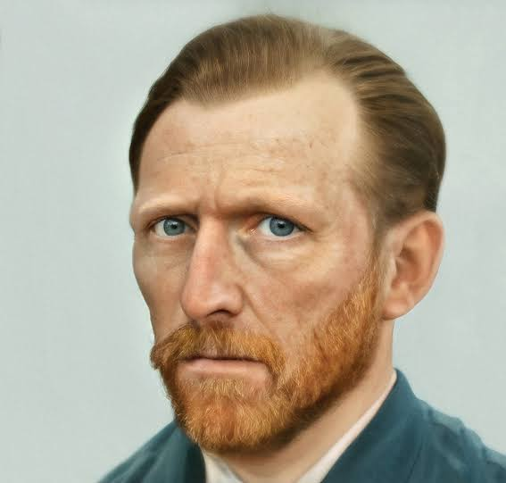
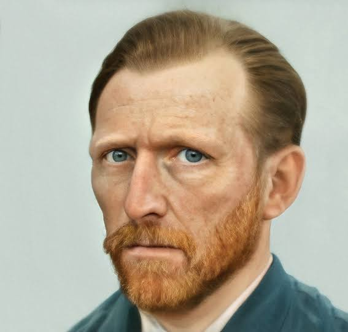

-

Мона Ліза
Мона Ліза — одна з найвідоміших картин у світі, що відображає загадкову усмішку жінки. Цей портрет є втіленням ідеалів епохи Відродження, зокрема глибокої психологічної виразності та уваги до деталей.
-
 

Зоряна ніч
Зоряна ніч — одна з найвідоміших картин Ван Гога, що відображає нічний пейзаж з виразними закрученими зірками та спокійним селищем. Ван Гог використовував яскраві кольори та експресивні мазки, щоб створити емоційно насичену атмосферу.
-

Крик
Крик — це зображення людської тривоги, виражене через спотворену фігуру, що стоїть на мосту. Мунк втілив у цій картині внутрішнє почуття паніки та страху, відображаючи переживання людини, що потрапила в екстремальну ситуацію.